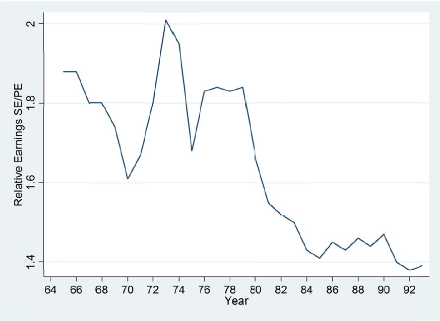
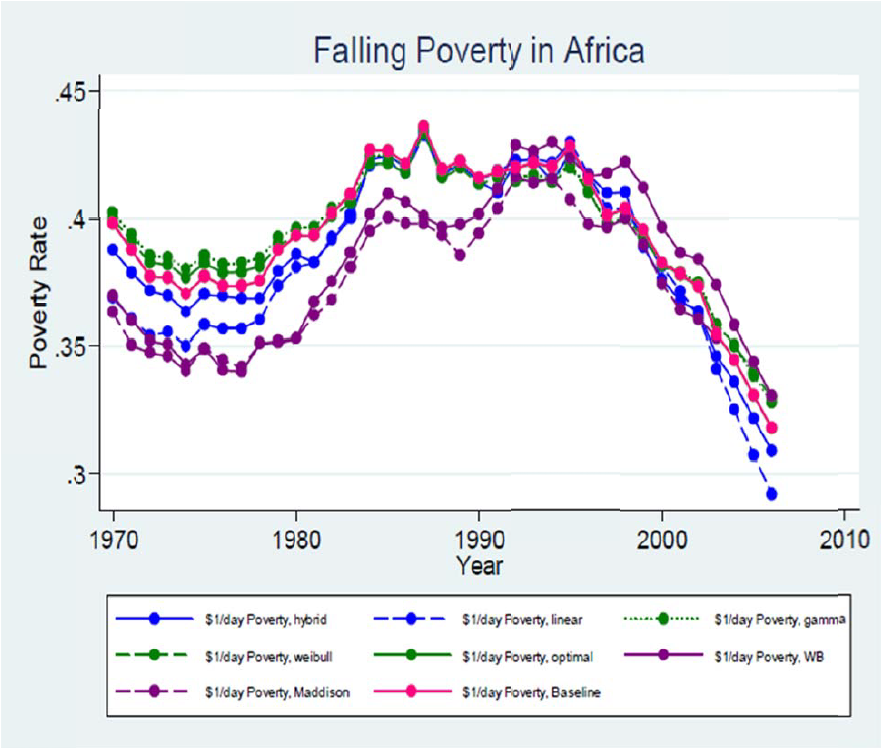
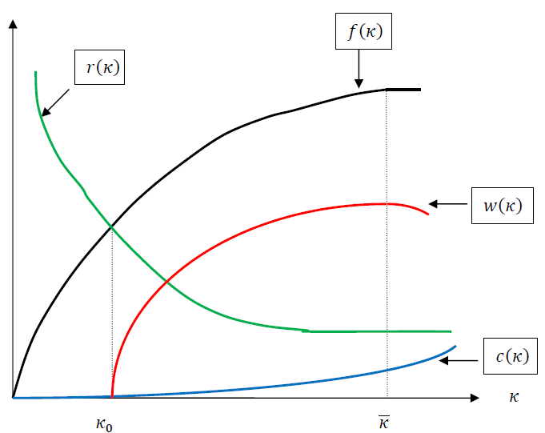

Capital-Skill Matching and Enterprise Development
Abstract
This paper analyzes an innovative model of entrepreneurship in which enterprise technology is defined by capital and enterprise output and wages are outcomes of a skill-capital matching process. In this model, enterprise quality is driven by the opportunity costs of labor and capital. A reduction in the cost of capital raises workers’ surplus, draws low-skill workers into entrepreneurship and results in low wage equilibrium while an increase in alternate wages has the opposite effect of raising enterprise wages. The potential for wage growth is determined by the extent of capital-skill gap: enterprises with gaps within a small neighborhood demonstrate a potential to grow while others are limited by competitively high price of capital or high cost of skill. The model suggests that strategies aimed at growth of entrepreneurship and wages must distinguish between existing and potential entrepreneurs. For existing entrepreneurs reinvesting wages, a program of skill upgrade is more potent than supply of low price capital; the former leads to higher wages while the latter perpetuates low wages. For enterprises generating below- subsistence wages, a strict targeting program of low-cost capital is appropriate. For potential entrepreneurs, efforts should seek to combine skill development with frameworks to match new skills to commensurate capital. A public-private partnership could achieve this goal without burdening the private sector while simultaneously eliminating inefficiencies associated with public lending programs.
1 Introduction
It is now a stylized fact, based on empirical evidence from different parts of the world that earnings decrease as self employment rates increase. Blanchflower (2000) examined data from 22 OECD countries including the United States for the period 1966-1996 and found evidence that growth of self employment is associated with reduction in growth of Gross Domestic Product (GDP). Figure 1 taken from Parker (1996) shows that self-employment as a fraction of total employment rose dramatically in the United Kingdom from 8% in 1979 to 14% in 1991 as a result of the self employment expansion programs implemented by Margaret Thatcher’s government. 1 Associated with this trend, as Figure 2 taken from Robson (1997) shows, relative self-employment income the ratio of self-employment income to wage employment income in the UK fell sharply from 1.85 in 1979 to less than 1.4 in 1991. Using data from the Occupational Wages Database collated at the NBER, Figure 3 shows the trend of average occupational wages for African countries from 1985 to 2000 for all non-agricultural occupations as defined by the International Labor Organization (ILO). Major reforms in most countries began in mid 1980s and ended around early to mid 1990s. The figure shows that wages began to fall shortly after the end of major reforms around 1993.



The consequences for income distribution are borne out in the data. Parker (1997) demonstrates that income inequality increased in the UK between 1976 and 1991, and that it was largely driven by the self-employed. Their results also show that income inequality among the self-employed was not the result of large numbers of people entering self employment, but mainly by a substantial increase in heterogeneity among the self-employed. In the case of African countries, Figure 4 taken from Pinkovskiy and Sala-i-Martin (2010) shows that poverty rates, defined as the fraction of the population earning less than $1 per day, began to fall after 1993. Figure 5, taken from the same study, provides standardized income distribution for African countries for 1970, 1990, 2000 and 2006. A comparison of the 1970 and 2006 distributions shows that the proportion of population living below $1 per day decreased after the reforms but the proportion of population trapped in the $1-3 per day bracket has risen from approximately 34% in 1970 to 50% in 2006. In effect, poverty headcount rates decreased but the fraction of the population trapped in low-wage activities increased over the 36-year period. Labor income is the most important component of household income in developing countries; therefore income distribution is closely linked to the labor market.


Given the proliferation of efforts to expand small-scale enterprises across Africa2 and the incidental expansion of self-employment after the major reforms ended, it appears that most of the workers drawn into self-employment got trapped in low-wage equilibrium.3 Figure 6 presents data on lending (interest) rates in African countries from 1980 to 2008, covering the period before and after the major reforms. It is easy to see that interest rates began to rise at the onset of the reforms that began in early 1980s. One of the elements of the reform packages implemented across countries was the requirement that lending institutions must do away with interest rate ceilings and allow them to be set by the market. As a result, interest rates shot up in many countries and the dispersion’s in rates began to increase as interest rates were determined by each country’s economic conditions (Duru and Kehinde 2012). Rising cost of operation (largely determined by the cost of capital) forced low-productivity enterprises to exit, leaving only high productivity enterprises in operation. The effect is a transformation of the enterprise sector from low productivity to high productivity. As a result, average earnings rose for employed workers (Figure 3, pre-1993) while the unemployed earned no income, causing the poverty headcount to rise (Figure 4, pre-1993). In the post-reform period, efforts to expand entrepreneurship by lowering the cost of capital stimulated low-productivity enterprises. This brought about lower unemployment but an increase in the fraction of workers engaged in low wage enterprises, which consequently led to lower average wages (Figure 3, post-1993). As a result, poverty headcount decreased, but the population in the low-wage equilibrium grew dramatically (Figure 4, post- 1993). The decrease in earnings following expansion of self employment in the UK is attributable to similar imperfections in the matching of capital with borrower skills. The beneficiaries of the loan guarantee schemes were typically the long-term unemployed who would have been subject to depreciation of their human capital. Therefore, a given stock of capital will be less productive, leading to a decrease in enterprise earnings.

There have been attempts to explain the decline in productivity and increasing income inequality as self employment increases. One of the explanations is centered on market competition. The idea is that in non-competitive labor markets with excess labor, individuals with high ability would select into wage employment so that those in self employment are generally of low entrepreneurial ability. This hypothesis has been repudiated by evidence. Hamilton (2000) examined data on earnings of wage employees and self employed individuals in the United States and found evidence that workers in paid employment earn higher income than workers in self employment. However, he found no evidence to support the hypothesis that the differential is due to selection of low-ability workers into self-employment. Evidence from low- income countries where labor markets are typically thought to be non-competitive also refutes the hypothesis. Blau (1985) analyzed data from Malaysia and instead found evidence of a weak positive selection 4 into self employment by entrepreneurial ability in urban areas. His finding is supported by evidence from India (Rosenzweig 1980), Thailand (Chiswick (1977); Bertrand and Squire (1980); Teilhet-Waldorf and Waldorf 1983), Kenya (House (1984)) and Guatemala (Sumner 1981) .An alternative explanation for decreasing productivity in the UK offered by Robson (1997) is that productivity declined as a result of decrease in the level of capital per self-employed worker. However, Barnejee and Newman (1993) cast doubt on the efficacy of this argument. They showed that decrease in average capital is not a sufficient condition for decrease in wages, but productivity and wages are outcomes of the distribution of capital over the underlying set of productive skills. Given an average capital per self employed worker, replacing a distribution that assigns increasingly large amount of capital to more productive workers (a sufficiently skewed distribution) with another distribution that assigns a fixed amount of capital to all workers (a uniform or skill-blind distribution) will lead to decrease in wages. In the latter scenario, capital will be over-employed at the upper end of the skill distribution and under- employed at its lower end, yielding disequilibrium between the cost of capital and its marginal product everywhere in the distribution except at the middle.
In this paper, we emphasize the centrality of skill-capital matching in enterprise formation in explaining the observation. Capital is essential for entrepreneurship but it comes at a cost and enterprise output depends on both capital and the entrepreneur’s skill. An enterprise is formed only if the lender and the entrepreneur both could earn positive surpluses from the enterprise. The lender’s surplus is the spread between the return to capital from the enterprise and the opportunity cost of capital while the borrower’s surplus is the excess of profit output minus cost of capital and alternate wages over the cost of skill. Individuals are aware of their skill endowments and can evaluate their productivity. Conditional on alternate wages, expansion of self employment will bring about a decrease in average earnings only if it is associated with a reduction in the cost of capital,5 which leads to a positive surplus for low-productivity entrepreneurs and ultimately draws them into self employment. As a result, the new entrants generate lower wages than existing entrepreneurs so that average earnings fall and earnings dispersion increases.
The central thesis of this paper is that the underlying matching of capital and borrower skills matters more than the average level of capital employed in self-employment.6 The hypothesis is that while the credit market and the social assistance programs have focused on expanding access to enterprise capital, they have not paid sufficient attention to the capital-skill matching process. Expansion of self employment without a decrease in earnings is achievable if prospective low-skill entrepreneurs are offered skill upgrade while keeping the cost of capital unchanged. In this case, new entrants are as productive as existing entrepreneurs and the skill- capital matching process is unaltered.
In the following sections, we present an enterprise formation model in section 2, and describe the enterprise labor market in section 3. We describe the general equilibrium of the labor market in section 4 and conclude in section 5 with policy implications.
2 The setting
We analyze a partitioned labor market model in which segments differ in both worker-job matching and wage determination processes. The most important feature of the model is an innovative entrepreneurship sector in which enterprise technology is defined by capital and job creation and wages are outcomes of a process of matching worker skills with capital. Workers create enterprises with the aid of capital to which they apply their labor and skills; an enterprise is created only if the joint surplus of the lender and the worker is positive. Enterprise surplus is driven endogenously by observed enterprise wages and exogenously by the opportunity cost of capital and alternate wages. A decrease in the cost of capital raises the surplus for low-tech low- wage enterprises and leads to creation of low-productivity enterprises.
Whereas the orthodox Marshalian models (price and quantity models) of employment and wage determination are sufficient to explain the functioning of the wage labor segment, they are not suitable for analyzing the enterprise segment where individuals must create their own jobs. The enterprise labor market departs from the standard labor market in the sense that production processes do not already exist; the entrepreneur has to create the enterprise to which he would then sell his labor. In essence, the employer is also the employee. Although the firm may grow and hire other workers, our focus on the enterprise creation process moves us away from size issues. In creating the enterprise a worker endowed with a given skill requires capital; the supply of enterprise jobs and consequently demand for enterprise skill of a given type depends principally on supply of capital. The task in this paper is to develop a formal model of employment and wage determination in this sector. We proceed in this direction below.
2.1 The Enterprise Sector
We consider an enterprise sector where capital and worker skills in the economy are exogenously given, and the distribution of enterprise types and wages are endogenous to skills and capital. An enterprise is created by matching capital with worker’s skill. We assume that the size of a unit of capital corresponds to the level of technology. For example, a low-tech enterprise requires a small size of capital and a high-tech enterprise requires a large size of capital. The enterprise creation process that we imagine is such that a low-tech enterprise can be created by workers with low, medium or high skills if they are matched with a small size of capital but a low-skill worker cannot create a medium or high-tech enterprise. In terms of productivity and wages, a high skill worker may produce more than a low-skill worker in a low-tech enterprise, but his productivity will be lower in a low-tech enterprise than in a medium or high-tech enterprise.7 In addition to skill, an individual is endowed with initial asset a and can choose to either work for a wage or to run an enterprise. An individual in wage employment earns a market wage \(w^m\) that depends on his skill and a return on his asset of \(r^m\)a where \(r^m\) is the market interest rate. A worker who chooses to run an enterprise must devote his entire labor endowment to it. The difference between capital invested in the enterprise and the individual’s asset is borrowed from the capital market at the borrowing rate.
We focus on one-person enterprises where output is determined by the production function
\[ y = f(s, k; \theta) \tag{1}\]
which utilizes the worker’s observable skill s, physical capital k, where \(k \geq a\) and unobservable worker’s ability captured by \(\theta\). The production function is in all respects an individual version of the standard production function but in addition reflects the dimensions of human capital that are emphasize entrepreneurship literature. The human capital literature recognizes the potential correlation that exists between measurable skills and unmeasured ability (Bedard 2001). while the entrepreneurship literature emphasizes the importance of unmeasured ability in productivity (Evans and Jovanovic 1989).8
The entrepreneur’s labor is a fixed input while skill and capital are the variable inputs. In order to emphasize the matching of skill and capital while focusing on productivity of the match, we express the production technology as a function of skill-adjusted capital
\[ y=f((s,k):\theta)=f\left(\left(1,\frac{k}{s}\right):\theta\right)=f\left(\left(\frac{k}{s}:\theta \right)\right)=f(k:\theta) \tag{2}\]
where \(k=\frac{k}{s}\) represents skill-adjusted input and \(\theta=\theta(s)\) is a shift parameter that depends on skill and has the property \(\theta'(s)>0.\) In essence, an enterprise is defined by a level of skill-adjusted capital. Equation 2 accounts for two properties of the model. First, an increase in n, conditional on unmeasured ability corresponds to an increase in the quantity of capital given the level of skill. Due to complimentarity between capital and skills as in standard production technologies, an increase in n will yield an increase output but a decrease in marginal output. Second, an increase in the level of skill, for example by replacing the worker with a more skilled worker, will lead to a decrease in n but shift the production function upward through the parameter \(\theta\). The reason is that an increase in observable measure of human capital is associated with an upward shift in the unobserved measure of human capital. In order to reflect these properties, we make the following assumptions:
a) \(f(k:\theta)\) is increasing and concave in \(k:f_k>0\) and \(f_{kk}<0;\)
b) Output and marginal returns to adjusted capital both increase by unmeasured ability, that is,
\(f_\theta >0; f_{\theta k}>0;\)
c) The Inada conditions hold: \(lim_{{k\to0}} f_k =\infty\) and \(lim_{{k\to\infty}} f_k=0.\)
The variable inputs receive their marginal products while enterprise profits are paid to labor as wages.9 Capital is paid its rent and skill is paid its marginal product which is equivalent to the cost of skill acquisition. In general, the cost of skill is interpreted in terms of the cost of effort in learning the use of capital. Because the cost is small when skill is high relative to capital and is large when skill is low compared to capital, the cost of skill increases with the level of skill adjusted capital. We suppress \(\theta\) in the meantime and define rent and wages respectively as
\[ r(k)=f_k;w(k)=f(k)-kf_k-c(k) \tag{3}\]
where \(c(k)\) is the price of skill and \(c'(k)>0.\) The output and earnings functions are shown in Figure 7 where each point on the horizontal axis represents an enterprise. Conditional on entrepreneur’s skill, output increases as increasing levels of capital are matched with the given skill until adjusted capital reaches \(\overline{k}\) , the point after which additional capital yields no increase in output. Return to capital, or rent, is the slope of the production function. From the Inada conditions, the slope is infinitely large at low levels and decreases with the level of skill-adjusted capital. We define a threshold \(\underline{k}\) as the minimum level of skill-adjusted capital for an enterpriseto be viable. For values of \(k\le{\underline{k}},\) the worker earns a negative wage due to a combination of low output and high rent. The price of skill is very low at this stage because the level of skill is high relative to capital. Nonetheless, there will be no activity in that interval because workers will have to pay rent by selling off other assets.10 The price of skill rises slowly, rent continues to fall and wages begin to rise gradually over the interval \(\underline{k}\le{k}\le{\overline{k}}.\) Irrespective of the amount of capital, a worker with a given level of skill can achieve output that is no more than \(f(\overline{k})\) in the absence of skill upgrade. For values \(k>\overline{k},\) output remains nearly flat due to concavity of the production function and rent stays flat (near zero) as well but the cost of skill rises as skill levels relative to capital are falling. This leads to decrease in wages as we move beyond the point \(\overline{k}.\) Therefore, the entrepreneur’s wage is maximized at \(\overline{k}.\) We designate \(\overline{k}\) as the efficient level of adjusted capital input, the level at which capital is commensurate with skill.

We demonstrate in in Figure 8 the effect of skill upgrade from \(s\) to \(s'\) reflected by a shift in the parameter \(\theta.\) Given capital, skill upgrade shifts the output and rent curves upward but the extent of the shift increases with \(k\) in line with assumption b) above. The shift produces two effects. First, the point at which wages become positive shifts to the left reflecting the increase in productivity of skill. However, the shift at this end is small because output increases only by a little while rent also increases by a little; the net effect on \(\underline{k}\) may be negligible. Second, the efficient level of adjusted capital shifts to the right in reflection of increased capacity of the worker to utilize a larger quantity of capital given the shift in unmeasured ability. In effect, the feasible range \([\underline{k},\overline{k}]\) widens with skill upgrade. However, because the skill cost function depends only on adjusted capital and not on output, it remains unchanged after the skill upgrade; the cost of skill only depends on the relative level of skill and capital along the horizontal axis. Thus the difference between the shift in output and the shift in rent widens as \(k\) increases, causing an increasing shift in the wage function. Consider an enterprise with initial adjusted capital of \(k_0\) that experienced a skill upgrade. Although adjusted capital decreases nominally from \(k_0\) to \(k_1\), wage increases from \(w(k_0)\) to \(w(k_1)\). It is also plausible from the rent graph that \(r(k_1)>r(k_0)\) In general, an increase in wage is accompanied by increase in rent when driven by skill upgrade (represented by the upward shift in the rent curve) , but is accompanied by a decrease in rent when it is driven by capital upgrade (represented by moving to the right on the horizontal axis).

We examine in Figure 9 the potential wage trajectory of enterprises with efficient levels of adjusted capital to demonstrate the implication of the earnings and cost structure for enterprise profitability. The vertical axis represents capital while the horizontal axis represents skill. We use the 45 degrees line to represent wage outcomes of optimal matches between skill and capital where skill and capital are commensurate. Because skill and capital are typically measured in very different units and scales which we do not attempt to reconcile, the 45 degrees line reflects \(commensurability\) instead of \(equality\) of skill and capital. In essence, skill upgrade is matched by corresponding increase in capital as we move along the line so that wages earned by optimal matches increase along the line. Figure 8 is connected to Figure 9 in the sense that an enterprise with \(k>\overline{k}\) lies above the 45 degrees line while an enterprise with \(k<\overline{k}\) lies below the line.

The broken vertical line at \(s=s_0\) represents the locus of initial adjusted capital of an enterprise. Consider an enterprise that starts with \(k_a\) where the capital is less than commensurate with skill (this translates to a very small value of \(k\) in Figure 8. At that level, output is low, the price of skill is low but rent is high, yielding a very low wage. An enterprise that begins at this point will find the cost of capital prohibitive and is unlikely to invest in capital. Because the cost of skill is low, the enterprise may choose to invest in more skills. But the enterprise will not benefit from such investment as it will not raise wages meaningfully: adjusted capital will decrease and rent will increase. The high rate of rent will eat away any increase in output achieved by raising the level of skill. In the absence of any investment, the high rent will drive enterprise wages westward until reaching the point a on the 45 degrees line.
It is interesting to note that equilibrium wage for the enterprise that started at \(k_a\) is exactly the wage that would be earned by an individual with skill \(s_a\) that is provided with capital that is just efficient for the worker, which results in adjusted capital of \(\overline{k}_a\). Therefore an individual entrepreneur with skill \(s_0\) will earn the same wage as an individual with skill \(s_a<s_0\). An enterprise that begins with \(k_b\) will face a similar experience. Consider an enterprise that begins at \(k_c.\) In that region, rent and cost of skill are both moderate but rent is falling while the cost of skill is rising. In the absence of any upgrade, or considering increase in skills only, enterprise wage will reach equilibrium at point \(c\) on the trajectory. However, additional investment in capital only, such as through reinvestment of wages, will lead enterprise wage northward until it reaches \(w(\overline{k}_0)\). Intuitively, additional capital is being added to a production process that is utilizing relatively high entrepreneurial skill. As a result, wages rise until it reaches the efficient level. However, additional investment in both capital and skills, with more on the capital side (maybe through wage reinvestment) to take advantage of falling rent, will raise wages and lead the enterprise to point \(d\) on the efficient trajectory. An enterprise that begins at \(k_d\) faces similar situation as one that starts at \(k_C\) with the difference that it has to invest more in skill than capital. Because of rising cost of skills, wages will initially fall as the entrepreneur invests in more skill until the enterprise latches onto the efficient trajectory. An enterprise that begins at \(k_e\) has very low skill compared to capital and faces prohibitive cost of skill but very low cost of capital. In the absence of skill upgrade due to the high cost, wages will fall and the enterprise will shrink in terms of capital until it reaches the size of an enterprise that started at \(k_d\) when it can begin investing in skill because skill costs are now moderate. Thus, an enterprise that started out with much larger capital than skill will shrink at first before it can grow.
Every enterprise will reach an equilibrium that is represented by a point on the 45 degree line. Given that entrepreneurs reinvest wages net of consumption in practice, an enterprise moves vertically north of its old equilibrium because capital increases through wage reinvestment while skill remains unchanged. In the absence of a matching skill upgrade, wages will fall and the firm will be back to its old equilibrium 11.However, investment in additional skills will move the reinvesting enterprise eastward and therefore move to another point on the 45 degree line.
Enterprise stability depends on two conditions. First, equilibrium wage must exceed a threshold level: \(w(\overline{k})^e \ge w_0\) where \(w_0\ge0\) is a floor wage12. for example \(w(\overline{k}_b)<w_0\) implies that enterprises at point \(a\) and \(b\) in Figure 9 are unstable. Second, equilibrium wage must be not less than the starting efficient wage: \(w(\overline{k})^e \ge w(\overline{k})^0\) where \(w(\overline{k})^0\) is is the wage that should have been earned if the initial match was efficient given the worker’s skill. This condition implies that an enterprise at point \(c\) is also unstable. Combining the two conditions, the stability condition is
\[ w(\overline{k})^0 \le w(\overline{k})^0 \ge w_0. \tag{4}\]
Equation 4 implies that an enterprise is stable only if the capital-skill “gap” is within a small neighborhood where rent and the cost of skill upgrade are both small. This is intuitively the goal of credit assessment prior to lending. While lenders are unlikely to create the exact efficient match \(k=\overline{k}\), they endeavor to create matches within a neighborhood \(k \in (\overline{k} -\delta, \overline{k} +\delta)\) that satisfies condition (4).
3 Enterprise Labor Market
We proceed to examine the dynamics of the enterprise labor market and develop Marshalian type market functions based on the preceding micro-foundation, and given a fixed distribution of capital and enterprise skills in the economy. An understanding of what constitutes demand and supply is necessary for understanding the market. An enterprise must first be created before skill is employed in production. That is, an enterprise does not exist without capital. In the context of the labor market, demand for skill is created when a lender provides capital for an enterprise activity. Thus, the entities (enterprises) created by capital are the buyers of entrepreneurial skills, effectively placing lenders at the demand side of the market, while the workers (doubling as entrepreneurs) are supplying the skill required to be combined with enterprise capital in the production process.
The next step is to confirm that the behavior of lenders and workers generate a downward-sloping demand curve and an upward-sloping supply curve respectively. In the context of the enterprise labor market, a wage increase is a signal of increased productivity, and ultimately an attraction for more workers and lenders. Conditional on a fixed distribution of skills in the population, this leads to a decrease in the average level of skill and an increase in skill-adjusted capital. Therefore the quantity of labor and capital increase but average level of skill decreases along the horizontal axis. Thus, an increase in the quantity of labor along the axis is associated with an increase in skill-adjusted capital.
On the supply side, an increase in the quantity of labor supply (and increase in skill adjusted capital) associated with increase in wages generates an upward sloping labor supply curve with wages on the vertical axis and skill-adjusted capital on the horizontal axis. On the demand side, an increase in capital (which leads to an increase in skill-adjusted capital conditional on skill) associated with an increase in wages is accompanied by a decrease in rent13. Because lenders earn rent and not wages, the behavior of lenders is a relationship between the quantity of capital and rent, where an increase in the quantity of capital is associated with a decrease in rent. Thus, a downward-sloping demand curve emerges with rent on the vertical axis and skill-adjusted capital on the horizontal axis. The two curves are combined in a Marshalian Demand-Supply framework in Figure 10. Instead of having two vertical axes, we combine them into a single axis where wages and rent are measured in different scales. The alternative is to have two vertical axes, one on either side of the graph. These curves bear resemblance to demand and supply curves obtained in traditional labor market frameworks. The main difference is the variable represented on the horizontal axis. As we move to the right, the quantity of workers and the quantity of capital both increase but average worker skills decrease so that skill-adjusted capital increases.

It is possible to determine the relative slopes of the wage (supply) and rent (demand) curves. Consider a fixed level of skill-adjusted capital and define elasticity as \(\varepsilon_{wk} \approx \frac{\partial_w}{\partial_k}.\frac{k}{w}\) where \(\frac{\partial_w}{\partial_k}\) is a partial derivative. From Equation 2 of the wage curve is related to elasticity of the rent curve by14
\[ \varepsilon_{wk} = -\left(\frac{\alpha}{1-\alpha}\right)\varepsilon_{rk} \tag{5}\]
where \(\varepsilon_{wk}\) is wage elasticity, \(\varepsilon_{rk}\) is rent elasticity, and \(\alpha(k) = \frac{kf_k}{f(k)}\) is the share of output accruing to owners of capital. For simple concave production functions, \(\alpha(k)\) is constant for all levels of \(k\). Therefore the relative elasticity of wage and rent curves depend on the share of output accruing to lenders in a given economy. We assume, in line with empirical findings, that \(\alpha<\frac{1}{2}\) This implies that the wage curve is relatively less elastic than the rent curve. In effect, the supply curve is less elastic than the demand curve.
3.1 Structure of Enterprise Sector
The enterprise sector comprises entities where entrepreneurs employ their endowed assets without borrowing as well as entities created through borrowing. For enterprises financed solely by endowed assets, given the possibility of borrowing to ease credit constraints, it must be the case that \(\alpha = \overline{k}.\) It is therefore safe to assume that self-financed enterprises are positioned along the \(w(\overline{k})\) trajectory depending on the equilibrium wage determined by the match between endowed assets and skills15. The assumption is not implausible for the following reason. The framework implies that such enterprises cannot grow by merely adding capital because adjusted capital is at the efficient level. That is, profit reinvestment only, without skill upgrade, will not lead to increase in wages. This implication is compatible with evidence from various studies of self employment suggesting that entrepreneurship skills are the most important constraint to small business growth (Yahya et al. 2011).
Enterprises created through borrowing face entirely different dynamics. In general the worker and the lender must have incentives to create an enterprise. Given the opportunity cost of capital of \(r^m\) and alternative wages of \(w^m\), the joint surplus of the worker and the lender in creating the enterprise is given by
\[ V(k) = [w(k)-w^m -r^ma][r(k)-r^m] \tag{6}\]
The first term on the right side is the worker’s surplus which is the difference between enterprise wage and the opportunity cost: alternate wages and forgone income from endowed assets.
Similarly, the second term is the lender’s surplus which is the excess of rent over the opportunity cost of capital. An enterprise will be created if and only if the worker and the lender earn positive surpluses. Indeed, creation of an enterprise is subject to the existence constraint
\[ V(k) \ge V_0(w_0,r_0) \tag{7}\]
where \(w_0\) is a floor wage and \(r_0\) is a floor return required by lenders. We now investigate how changes in the exogenous variables affect both the size and the structure of the enterprise sector.
Consider an increase in interest rates \(r^m\). Lenders’ surplus decrease as the opportunity cost of capital increases. As a result, lenders must ration capital by pursuing either of two options. One, they can reduce the amount of capital offered to all intending entrepreneurs. But this option will lead to a general decrease in wages so that more enterprises would violate the stability constraint (4). Second, they can exclude lending to low-tech enterprises that would not satisfy the existence constraint following the increase in interest rate. The resultant upward shift in skills leads to increases in both wages and rent. This shift is illustrated in Figure 11 . Supply of capital falls on the lender’s side of the market and causes the enterprise labor demand curve to shift to the left. At the same time, an increase in interest rate reduces the worker’s surplus through increase in return on endowed asset. In response, workers with low skills who are unable to generate the required return will exit the enterprise sector causing the supply curve to shift to the left, causing a decrease in the quantity of labor and increase in average skills. Skill-adjusted capital reduces nominally but the production function shifts upward as presented in Figure 8. Because the demand curve is more elastic than the supply curve, adjusted capital decreases and wage increases in comparison to the initial equilibrium. In effect, rising interest rates squeeze out low-skill-low-tech enterprises because they are unable to generate positive surpluses at prevailing costs. On the other hand, a decrease in interest rates pushes the demand and supply curves to the right, resulting in higher skill-adjusted capital, large number of low-skill-low-tech enterprises, and lower wages in equilibrium.

An increase in alternate wage \(w^m\) reduces only the worker’s side of the surplus function, and workers with low entrepreneurial skills will exit from the enterprise sector, leading the enterprise labor supply curve to shift to the left while the demand curve remains unchanged. As shown in Figure 12, skill-adjusted capital falls and equilibrium wage rises. On the other hand, a decrease in \(w^m\) raises the workers’ surplus and attracts more workers into entrepreneurship.

Average skills decrease, and skill-adjusted capital increases, leading to lower equilibrium wages. Thus, an increase in interest rates or alternate wages has the effects of raising average skills and wages in the enterprise sector. This is consistent with the stylized facts: co-movement of interest rates and wages, and co-movement of wages across sectors. But the extent of wage increase and changes in adjusted capital depend on whether the change is driven by wages or interest rates. Changes in relative enterprise wages (ratio of enterprise wages to alternate wages) depends on the ease of entry into the enterprise sector, which depends on the ease of finding capital. If credit markets are well developed so that entry and exit from self employment is unconstrained, then relative enterprise wages will fall and rise faster than in societies with less developed credit markets.
4 A Description of the General Equilibrium
We now describe the general equilibrium in an economy that consists of three sectors: the agricultural sector, the formal wage sector and the enterprise sector. Before proceeding, we first describe the pattern of factor mobility in the economy.
4.1 Skill and Capital Mobility
In general, there are skill overlaps between the sectors. Workers at the high end of the agricultural sector skill distribution are comparable to workers in the enterprise sector.16 Similarly, some workers at the high end of the enterprise sector skill distribution are those who could be in the formal wage sector but voluntarily choose the entrepreneurship sector. Given the impracticality of direct transition from the agricultural sector to the formal wage sector for many workers, inter-sectoral mobility assumes the form of a step-like or “ladder” function.17 We assume a fixed-capital economy with mobility of capital and labor across sectors. Increase in agricultural or urban formal wage draws workers away from the enterprise sector while a decrease has the reverse effect. Whenever workers are drawn away from enterprise sector, the workers left behind are selectively more productive. It is plausible to assume that individuals with higher entrepreneurial skills are less likely to leave the enterprise sector.
4.2 General Equilibrium Dynamics
Consider the impact of growth in the formal wage sector. Given the supply of skills, the labor demand curve shifts to the right and wages and employment both increase. This leads to increase in alternate wages, which will reduce employment in the enterprise sector. Individuals with high skill but end up at points a, b and c in Figure 9 will be the first set to exit the sector due to underemployment of their skills. Although some low-tech enterprises might remain because some low-skill workers could remain, enterprise wages will nevertheless increase. The increase in enterprise wages might attract agricultural workers with above-average skills, especially in cases where agriculture is predominantly peasant and small-scale, leading to a decrease in average skills and reduction in agricultural wages.
An increase in agricultural wage, driven by technological change or improvement in climatic conditions, raises alternate wages for workers at the bottom of skill distribution in the enterprise sector. Low-skill workers in low-tech enterprises will exit the enterprise sector for the agricultural sector, leading to higher wages, higher skills and lower employment in the enterprise sector. The impact on the formal sector would at best be minimal. While some workers may move directly from the formal wage sector into agriculture, the increase in enterprise wages may also attract comparable workers from the formal sector. The net effect on the formal wage sector depends on the part of the skill distribution that workers exit from.
A strategy of reducing the cost of enterprise capital increases the surplus on the workers’ side of the joint surplus function. Workers move out of the agricultural and formal wage employments into entrepreneurship, shifting the entrepreneurship labor supply curve to the right. However, the effect on the lenders’ side depends on whether the program is a private or a public sector initiative. If private lenders reduce their interest rates but continue to appraise loans on the basis of productivity, they are likely to remain selective in terms of enterprise skills in order to reduce the risks of default. The reduction of lending rate is reflected in a movement along the demand curve. Conditional on supply adjustment, enterprise wages will decrease and skill adjusted capital will increase as in Figure 13. On the other hand, if the lending policy is driven by public policy, the outcome will be as if interest rates are reduced exogenously, which also leads to lower wages and higher skill-adjusted capital. However, for identical reduction in interest rate, the difference lies in the degree to which the skill composition of the sector changes, which can be deduced by comparing Figure 13 (drawn to yield identical reduction in interest rate) and a reversal of Figure 11. Notice that, in equilibrium, the increase in adjusted capital (decrease in overall level of skill) is very large in the case of public policy and very small in the case where private lenders cut lending rates. That is, the selective mechanism of private lenders that accompany reduction of lending rates allows minor reductions in enterprise productivity while the skill blind process that accompanies public low-interest capital schemes largely undermine productivity.

Suppose instead that vocational or entrepreneurial skill is upgraded. That is, instead of quantitative increase in labor supply we have a qualitative increase in entrepreneurial skills, which shifts the supply curve to the left. In this case, adjusted capital will fall (capital-skill gap will close) and wages will rise. Thus, skill upgrade is more potent than low-cost capital for poverty reduction. Stagnation in production processes with more credit supply has generated increased employment in the enterprise sector but has not made a significant dent on poverty rates. Low-productivity activities are easy to replicate and they generate low returns when matched with low cost capital. Studies relating to Small and Medium-Scale Enterprises show that lack of skills, rather than lack of capital, are responsible for the slow growth of the sector.
However, the policy of skill upgrade alone must be directed toward those already engaged in entrepreneurship and are reinvesting wages. Suppose that unemployed workers, those outside entrepreneurship, are provided with additional skills. In the absence of deliberate efforts to expand access to enterprise capital (not by cutting lending rates), these workers will become job seekers in the formal sector rather than becoming entrepreneurs. Considering the wage profile where the formal sector offers the highest returns, these newly trained workers would simply join the pool of unemployed workers seeking formal employment.
5 Conclusion
Several social assistance and poverty-reduction initiatives have been implemented in both high and low income countries over the last four decades. But while these initiatives have managed to pull more people above the poverty threshold, they have not been successful in pulling them far out of the low income trap. One of the problems with these ideas, is that allocation of capital has not been sufficiently sensitive to skills. A successful pro-growth enterprise lending program requires a skill-sensitive strategy.
Indeed, the two components of poverty, namely unemployment and underemployment (or low-wage employment), require different policy approaches. Unfortunately, existing approaches have tended to treat the two as one. A program of skill upgrade for the unemployed that is accompanied by a framework that provides skill-sensitive capital to graduates of such programs is the appropriate approach. Public training programs could keep a dossier of participants and make it available to lenders for the purpose of assessing and matching skills with appropriate levels and forms of capital. This form of public-private partnership does not impose any cost on the private sector and avoids the inefficiencies associated with putting the government in the lender’s chair. The other advantage is that the government does not have to provide guarantees. Guarantees would generate low-productivity activities in the sense that low-skilled workers who would otherwise be unable to obtain capital would find their ways into entrepreneurship once guarantees are provided to lenders. The British self employment expansion and the accompanying decrease in earnings is a testimony in this regard.
It is not the case that every low-wage entrepreneur lacks skill or everyone lacks capital. Entrepreneurs in low-wage employment are in two categories: those with overemployed skills and those with underemployed skills. The first category requires skill upgrade while the second category requires more capital. Low-cost credit could continue to be directed toward micro-entrepreneurs earning wages that barely meet subsistence needs. But such programs would require strict targeting such as was the case in the early period of micro credit.18 The absence of strict targeting in latter micro credit programs has turned many of them into low-wage traps. By means-testing loan applicants, borrowers who are able to generate above-subsistence earnings should be excluded from low-credit programs and be granted credit on the basis of their productive skills.
Private commercial lenders are able to produce capital-skill matches with gaps that fall within the neighborhood that permits wage growth while most public lending programs fail to do so. Because commercial loans are usually large, commercial lending practice is likely to catalyze the emergence of large enterprises with capacities to grow. For the same reason, and because public lending programs typically provide small to medium capital, substantial mismatch in lending programs would typically yield low-wage enterprises that are unable to grow without additional interventions. Thus, the “missing middle” in the distribution of firm sizes would be a product of mismatch rather than absence of medium-size capital. If middle-size loans are made available but are accompanied by lending practices that fall short in the capital-skill matching process, such models are unlikely to be the pathway to recovering the missing middle. A program that aims to promote entrepreneurship must be designed in ways that care about the matching of capital and skills.
References
Appendix
Appendix A
It is possible to establish the conditions under which wages remain in equilibrium. From the wage equation in Equation 2, the following is the time path of wage:
\[ \dot{w}=f_k\dot{k} -(k\dot{f}_k + f_k\dot{k}) - \phi'(k)\dot{k}=-k\dot{f}_k-\phi(k)\dot{k}. \tag{A1} \] It remains now to define \(\dot{k}\). Enterprise capital grows through reinvestment of wages and diminishes through depreciation. We assume that skill grows through an investment rate of \(\sigma\). Denoting the rate of wage reinvestment and the rate of capital depreciation as \(\tau\) and \(\delta\) respectively, the time path of capital is given by \(\dot{k}=\tau w - (\delta + \sigma)k\). Allowing \(\dot{f}k= \lambda\) and \(\phi'(k)=\rho\), the wages path equation becomes \(\dot{w}=[\rho(\delta +\sigma)-\lambda]k-\rho \tau w.\) In equilibrium where wages remain constant, we obtain the condition
\[ \frac{\tau w}{k}-\delta=\sigma- \frac{\lambda}{\rho}. \tag{A2} \]
where \(\sigma\) is the rate of skill upgrade, \(\lambda\) is the time derivative of rent, and \(\rho\) is the price of skill. The left side of Equation (A2) is the rate of investment in capital minus the rate of depreciation of capital, while the right side is the rate of skill upgrade minus the ratio of rent derivative to the price of skill. When rent is unchanging \((\lambda=0)\), then the equation simply states that the net rate of investment in capital is equal to the rate of skill upgrade.
Appendix B
Given that \(r(x)=f_k\) and \(w(k)=f-kf_k,\) we obtain \(\frac{\delta r}{\delta k}=f_{kk}\) and \(\frac{\delta w}{\delta k}= -kf_{kk}\). substituting the derivatives, \(\varepsilon_{wk}=\frac{-k^2 f_{kk}}{f(k)-kf_k}\) and \(\varepsilon_{wk}=\frac{kf_{kk}}{f_k}\). These equation yield \(\varepsilon_{rk}= -\frac{kf_{kk}}{f_K} \left(\frac{kf_k}{f-kf_k}\right).\) Substituting the \(\varepsilon_{wk}\) and \(\alpha = \frac{kf_k}{f_k}\) yields the equation \(\varepsilon_{wk}=- \left( \frac {\alpha}{1-\alpha} \right) \varepsilon_{rk}\). To investigate how \(\alpha\) changes with \(k,\) we obtain the first derivative \(\sigma'(k)=\frac{kff_{kk} +f_k(f-kf_k)}{f^2}.\) For simple concave production functions, for example \(f(k)=k^\frac{1}{r},\) the numerator of \(\alpha'(k)\) is always zero.
Footnotes
Although many factors have been advanced for expansion of self‐employment, the government initiatives were undoubtedly central. In order to combat high unemployment that persisted into the late 1970s, the British government under Margaret Thatcher created several initiatives aimed at supporting self‐employment beginning from 1981. These initiatives include the Enterprise Allowance Scheme which provided guaranteed income of GBP40 per week to unemployed people that set up an enterprise, the Loan Guarantee Scheme through which the government provided the security that lenders usually require in order to facilitate lending to viable small businesses that may lack access to finance, and the Business Expansion Scheme that aimed to provide investment opportunities for investors↩︎
These efforts came in many forms. There were pressures on lending institutions to reduce interest rates, leading to development of enterprise finance initiatives by commercial banks and other financial institutions. Some assistance also came in the form of credit guarantees. These efforts drew a large number among the unemployed workers into entrepreneurship.↩︎
Governments in Africa and other developing countries implemented low‐cost capital schemes during 1970s and early 1980 and the outcomes were self‐defeating. Earnings plunged, default rates rose and poverty rates arising from very low wages skyrocketed. The self‐defeating growth of higher employment and lower wages following increased supply of low‐cost capital could be attributed to several factors. First, an exogenous decrease in the cost of capital will result in lower average skills and therefore reduce enterprise productivity. Output produced by low‐ tech enterprises is typically non‐tradable and only subject to demand for domestic consumption. In countries where imported goods are favored over domestic products due to either preferences or quality issues, low‐tech enterprise output growth is associated with product glut and low prices. Second, other than capital requirement, there is free‐entry into the sector and low‐tech production systems can easily be replicated. Free entry ensures that output prices and therefore earnings are driven to razor‐thin competitive levels. The absence of institutional barriers and coordination failures make price regulations impossible. Third, an increased supply of capital that is not driven by skills will have different implications than supply shift that is driven by skills. Increased supply of capital that is driven by skill upgrade moves the enterprise sector toward more productive enterprises and leads to higher wages. On the other hand, an increase in the supply of capital without efficient matching leads to lower wages and reduction in enterprise efficiency levels.↩︎
Expectation of positive selection on ability into wage employment in non‐competitive labor markets is based on the assumption that individuals with high ability are likely to be selected by employers. In non‐clearing markets, employers subject job candidates to series of tests – written, oral and situation‐room types of experiences – in order to select the most able candidates. Because these opportunities are limited, individuals with the highest abilities are often drawn into wage employment at least for the first few years of their careers. However, the sample of workers who seek wage employment may not be representative of the labor force. Indeed, if individuals with the highest levels of ability choose not to seek wage employment, then positive selection on ability into wage employment among job‐seekers will not translate into positive selection on ability for the entire labor force.↩︎
A loan guarantee reduces the cost of capital in two ways. First, it eliminates the transactions cost component of lending rates. Second, it eliminates the opportunity cost associated with forgone earnings from assets that would otherwise be pledged as collateral.↩︎
The deficit of attention to skill and capital matching is not surprising. It is always assumed, and taken for granted, that the credit market is capable of creating efficient matches between capital and skill in the formation of enterprises. But there are noteworthy grounds to believe that this is not always the case. The practice in the credit market to screen borrowers on the basis of perception of information asymmetry rather than on the basis of borrowers’ productivity implies that high productivity individuals lacking collateral may be denied access to entrepreneurship capital.↩︎
Compare a high school dropout with a Masters’ of Science in civil engineering. Both of them can fry plantains but the dropout cannot supervise road construction. Meanwhile, it is possible that the M.Sc. will fry more plantains in a unit of time than the dropout. In an economy endowed by capital for frying plantains, everyone would fry plantain. On the other hand, if capital is only available for road construction, then the engineers are employed while the dropouts are unemployed. If capital is only available for road construction in an economy populated by high school dropouts, then no construction enterprise is created and nobody is employed.↩︎
An individual’s education or skill is positively correlated with his unmeasured ability. It is implausible that the level of education an individual attains alone summarizes all the productive skills that may be productive in entrepreneurship, neither is it plausible to assume that innate ability alone summarizes them. Existence of complementarities between observed education and unobserved ability is arguably plausible.↩︎
This is consistent with the practice where the profits of the enterprise are considered as earnings of the entrepreneur. The only difference is that we separate returns to labor from returns to skill in the model.↩︎
This corresponds to an extremely high rate of underutilization (or underemployment) of worker skills.↩︎
The conditions under which an enterprise remains in equilibrium are discussed in details in Appendix A.↩︎
The wage floor increases with the cost of capital and alternate wages.↩︎
Intuitively, rising wages indicate higher returns in the sector, and attracts more workers and lenders as long as rent exceeds the cost of capital. This leads to increase in capital supplied to the sector, and consequently, decrease in rent.↩︎
Details of the derivation are provided in Appendix B.↩︎
The literature on intergenerational wealth transfer has examined the possibility that individuals who receive large bequeaths are also likely to come from households endowed with high entrepreneurial skills. Therefore, we expect to observe a strong correlation between enterprise skill and endowed asset in a cross‐section of entrepreneurs.↩︎
Both sets of workers are likely to have had some formal education and vocational or apprenticeship training.↩︎
For example, unskilled workers from the rural area that arrive in the urban center in search of formal sector jobs must enroll in appropriate skill development program or course of study that may take some time to complete. In the meantime, such workers will engage in activities in the entrepreneurship sector or otherwise remain unemployed while attending school. It is on this basis that the model reconciles with the previous models that describe the enterprise sector as a transit sector.↩︎
A reading of Yunus (2003) shows that early microcredit was targeted at workers with observable productivity. One of the weaknesses inherent in subsequent microfinance practice is that loans are often targeted at workers with latent productivity. The non‐observability of productivity for many of the clients and the lack of sensitivity of loan amounts to productivity introduced important imperfections in the capital‐skill matching process in microcredit schemes.↩︎